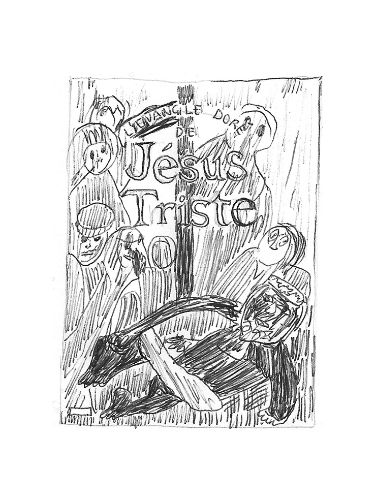

Thierry Van Hasselt – sélection
Bruxelles, Belgique
Membre fondateur du Frémok, maison d’édition franco-belge spécialisée dans la littérature graphique
Auteur d’une dizaine de livres
Professeur dans la section bande dessinée à Saint Luc, Bruxelles
Enigma, Alexis Beauclair, auto-publié, 2018
Les Failles de Mr Zeng, Fredox & Léo Quiévreux, Le Dernier Cri, 2016
La Bilbe, Antoine Marchalot, Arbitraire Éditions, 2018
Dirty, Mavado Charon, Mania, 2017
Sabrina, Nick Drnaso, Presque Lune, 2018 (Sélection officielle Angoulême 2019)
Vies parallèles, Actes Sud, L’An 2, 2018
Chez Frémok, sélection spécifique
L’homme armée, Frédéric Coché, Frémok, 2018
Le GRRAAOU, Frédéric Coché, Frémok, 2018
Base/Zone, DoubleBob, Frémok, 2016
Vivre à FranDisco, Frédéric Coché, Frémok, 2018
L’évangile doré de Jésus-triste, Collectif, dir. Yvan Alagbé, Frémok, 2017
Plus si entente, Dominique Goblet & Kai Pfeiffer, Frémok & Actes Sud BD, 2014
Quelques personnes-ressources :
Alexis Beauclair
Sammy Stein
François Dejonghe
Sukrii Kural
Éditions Misma
Éditions Arbitraire
Collectif Couteau - Margaux Duseigneur, Antoine Marchalot etc.